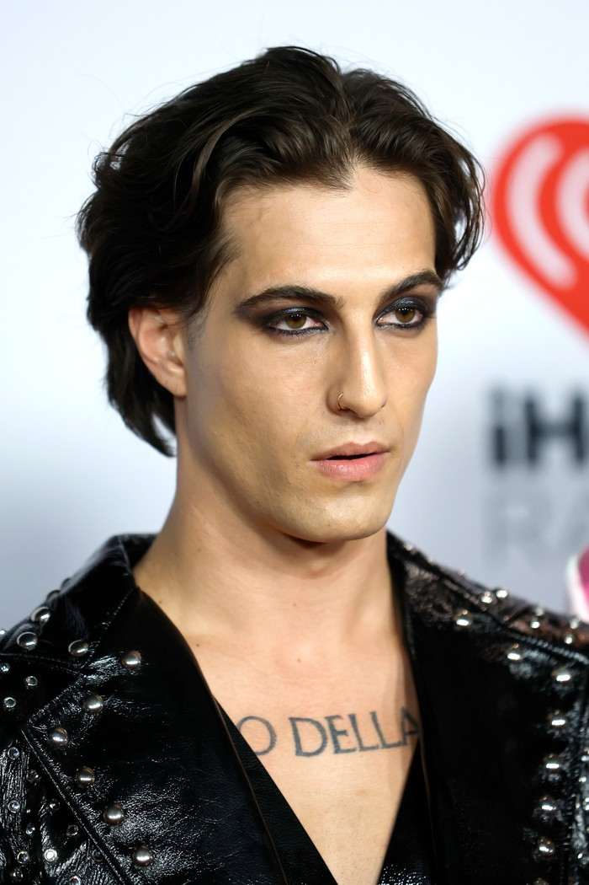
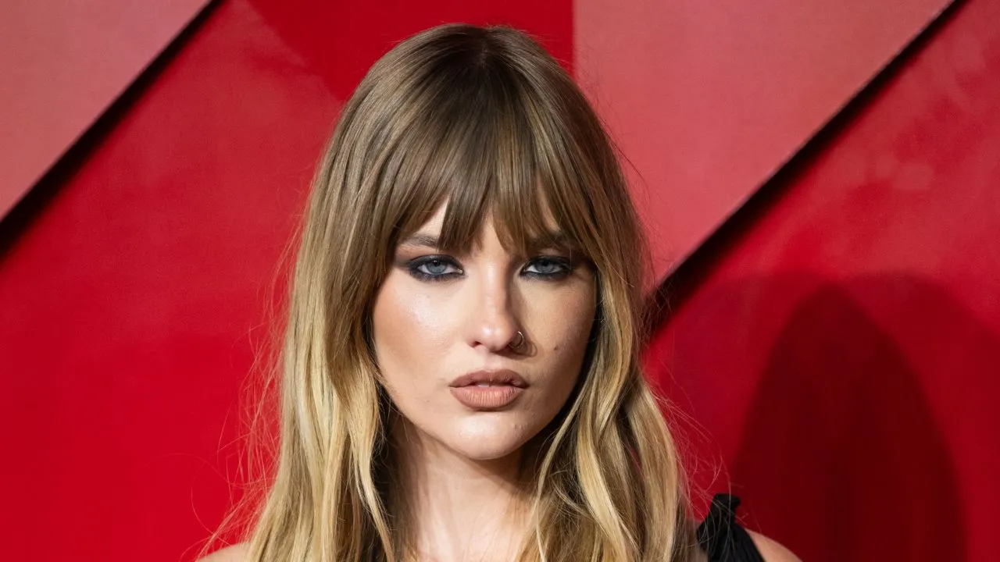

Måneskin: Banda de Rock Italiano
Måneskin es una banda de rock originaria de Roma, Italia, que se formó en 2016. El grupo alcanzó fama mundial tras ganar el Festival de la Canción de Eurovisión 2021 con la canción "Zitti e buoni".
La banda está compuesta por cuatro miembros:
-
Damiano David - Vocalista:
Damiano David nació el 8 de enero de 1999 en Roma, Italia. Es conocido por su poderosa voz y su carisma en el escenario. Además, su estilo único y su presencia en el escenario son una de las características más destacadas de la banda. Damiano ha sido el líder de la banda desde sus inicios y su capacidad para conectar con el público es una de las claves del éxito de Måneskin

- Victoria De Angelis - Bajista:
Victoria De Angelis nació el 28 de abril de 2000 en Roma, Italia. Es la bajista del grupo y una de las fundadoras de Måneskin. Desde pequeña mostró interés por la música y fue influenciada por el rock clásico y el punk. Su estilo energético y su habilidad con el bajo la han convertido en una pieza fundamental del sonido de la banda.

- Thomas Raggi - Guitarrista:
Thomas Raggi nació el 18 de enero de 2001 en Roma, Italia. Es el guitarrista principal del grupo y es reconocido por sus solos de guitarra electrizantes y su estilo innovador. Thomas ha sido una pieza clave en la creación de los riffs que definen el sonido característico de Måneskin.
-
Ethan Torchio - Baterista:
Ethan Torchio nació el 8 de octubre de 2000 en Italia. Es el baterista de Måneskin y se unió a la banda en 2016. Su estilo en la batería es enérgico y preciso, lo que le da a la banda una base sólida para sus presentaciones en vivo. Ethan es conocido por su habilidad para mezclar géneros y aportar una gran dosis de ritmo a las canciones del grupo.